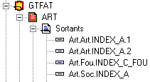
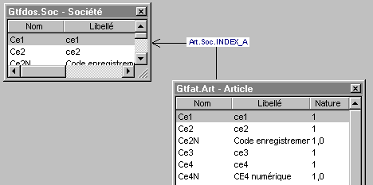
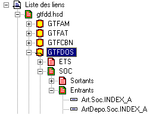

Xwin distingue deux types de liens, les liens entrants et les liens sortants.
Lien sortant
Un lien est dit sortant pour une table A lorsqu’il permet d’accéder à une table B en utilisant un index de la table B.
Exemple


Le lien Art.Soc.INDEX_A est un lien sortant de la table Article. Depuis un enregistrement de la table Article, il permet d’accéder à la société.
Lien entrant
Un lien est dit entrant pour une table A lorsqu’il permet d’accéder à cette table A depuis une table B en utilisant un index de A.
Exemple

Le lien Art.Soc.INDEX_A qui est un lien sortant pour la table Article est un lien entrant pour la table SOC (société).
L’éditeur de liens permet de définir des liens entre plusieurs dictionnaires. Dans ce cas, on ne peut décrire que des liens entrants dans le dictionnaire principal. Voir Liens entre plusieurs dictionnaires .